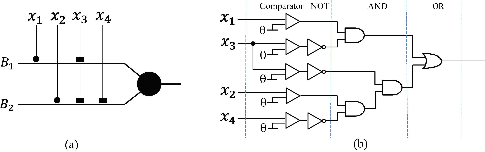

Model Description
DNM is a single neural model with a plastic dendritic structure, which was inspired by the realistic neural cell model in biological research. The structural description of DNM is illustrated in Fig. 1. As shown in Fig. 1, DNM has four layers, namely, the synapse layer, the dendrite layer, the membrane layer and the soma body.

Fig. 1. Structure of DNM.
Synaptic layer: each synapse connects one of the feature attributes to receive the input signals from the training samples. A modified sigmoid function with specified connection parameters is adopted to describe the process, which is expressed by:

Dendrite layer: Dendritic structure plays an important role in neural computation.
Different neurons have distinct dendritic structures, and even a small variation
in dendritic morphology produces a great change in neural function. Thus, to realize
the dendritic morphology's plasticity, the simplest nonlinear operator named ‘multiplication'
is adopted in
DNM:

Membrane layer: On the membrane layer, the signals from each branch of dendritic arbor converge and interact with each other. The interaction mechanism of the membrane layer can be described by the summation operation which is shown as follows:

Soma body: Soma body is the core part of a single neural model. Specially, it integrates the signals from the membrane layer. Then, the soma compares the results with the threshold of the soma; if it is larger, the neuron will fire; otherwise, it will not fire. The function of the soma body is expressed by:

where $k_{soma}$ and $\theta _{soma}$ are user-defined parameters of the soma body. To make the output of the neuron approximate to 1 or 0, $k_{soma}$ and $\theta _{soma}$ are set to be 10 and 0.5, respectively.
Connection cases
As introduced above, $(w, q)$ are the only parameters which determine the final model architecture of the DNM for each specific task. Different values of $(w, q)$ equip the synapses with four different connection cases, namely the Direct connection, Inverse connection, Constant 1 connection and Constant 0 connection. The symbol of each connection case is presented in Fig. 2. The specific description of these connection cases is shown below:

Fig. 2. Four connection cases of the synaptic layer.
Direct connection: $C_\mathcal{D}=\{(w, q)|0
Inverse connection: $C_\mathcal{I}=\{(w, q)|w_{i,m}
Constant-1 connection: $C_1=\{(w, q)|q_{i,m}<0
Constant-0 connection: $C_0=\{(w, q)|0 Neural pruning scheme Depending on the connection cases of the synaptic layer,
DNM can discard unnecessary synapses and useless branches of dendrites
by implementing the neural pruning scheme that contains dendritic pruning and synaptic pruning.
Dendritic pruning: As shown in Fig. 3, there are two branches of dendrites ($B_1$ and $B_2$) in
the structure of DNM in Step 1. On the branch $B_2$, the synaptic layer of the input $x_2$ is in the
Constant 0 connection case, and the output of this synapse remains at 0. Since the computation operation
of the dendrite layer is multiplication, regardless of what the values of $x_1$ and $x_2$ are, the output
of $B_2$ will still be remain constant at 0, and it has no contribution on the final results of the soma;
therefore, the result of this branch should be ignored. Thus, once a branch of dendrites has a synaptic
input that is in the Constant 0 connection after learning, the whole branch needs to be discarded in DNM.
This simplification scheme is named `dendritic pruning.'
Fig. 3. Simulation of dentritic pruning
Synaptic pruning: In Fig. 4, DNM has two branches of dendrites ($B_1$ and $B_2$) in the structure,
and the branch $B_2$ has a Constant 1 connection input. As introduced above, regardless of what
the value of the input $x_2$ is, the output of this synapse is always equal to 1. It has no influence
on the results of the branch. Thus, the final result of soma should ignore the input $x_2$ on this branch,
and these kinds of synapses that are in the Constant 1 connection case should be discarded.
We define this simplification scheme as `synaptic pruning.'
Fig. 4. Simulation of a synaptic pruning Approximation logic scheme In fact, the simplified structure of DNM can be substituted by a logic circuit
classifier (LCC). To be specific, the synaptic layer works as an analog-to-digital converter,
named a `comparator,' which compares the input signal with its threshold $\theta$.
If the input $x_{i,m}$ is larger than $\theta_{i,m}$, the comparator will output 1. Otherwise,
it will output 0. After neural pruning, there are only two kinds of synapses left in the structure.
The direct synapses can be replaced by the comparators, and the inverse synapses will
be substituted by the combination of the comparators and the logic NOT gates.
The value of $\theta_{i,m}$ is calculated by the trained parameters
$w_{i,m}$ and $q_{i,m}$ in the synaptic layer, which can be formulated as:
Through the comparators, all the input signals will be transformed
into binary variables. Since the operation of the dendritic layer is multiplication,
each branch of dendrites is made identical to the logical AND gates. The result of the branch
is 1 if and only if all the inputs are 1. As the membrane layer uses the summation operation
to collect the dendritic signals, it is equal to the logical $OR$ gate. Because the outputs
are all binary variables, the computation of the soma body can be ignored. By the approximate
logic scheme, the simplified structure of DNM can be substituted by an LCC.
Fig. 5 illustrates a simplified ALNM and its corresponding LCC.
It can be found that branch $B_1$ has two left synapses.
The synapse of the input $x_1$ is direct, and it is replaced by a comparator.
The synapse of $x_3$ is inverse, and it is replaced by a comparator and a logic NOT gate.
Then, the outputs of $x_1$ and $x_3$ are connected by the logic AND operation. Similarly,
the approximation scheme is implemented on the branch $B_2$. Next, the outputs of $B_1$
and $B_2$ are connected by the logic OR gate. In this way, the final outputs of the logic
circuit can be regarded as the classification results.
 Fig. 5. Simulation of neural approximation